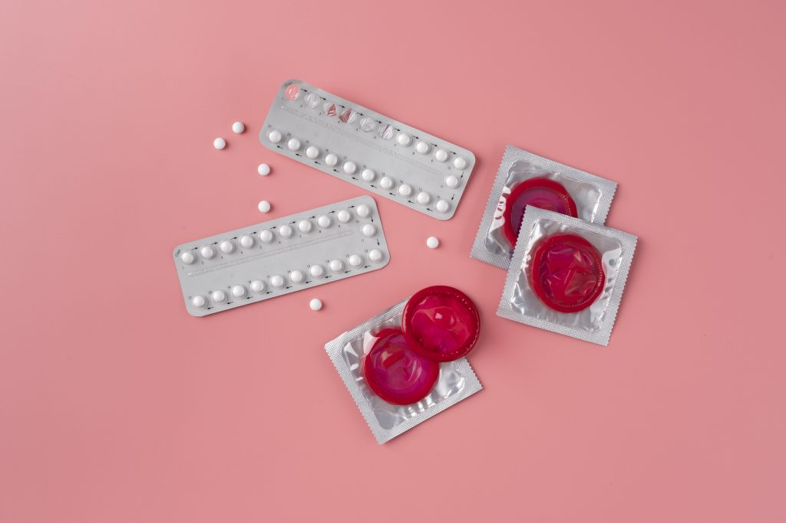

Gravidez na Adolescência e Consequências
A gravidez na adolescência é uma questão de saúde pública global que afeta milhões de jovens a cada ano. É uma fase da vida que geralmente é marcada por descobertas, crescimento pessoal e educacional. No entanto, quando a gravidez ocorre durante a adolescência de forma não planejada, ela pode acarretar uma série de desafios e problemas.
Um dos principais problemas da gravidez na adolescência é o impacto na educação. Muitas vezes, a gravidez resulta na interrupção da educação formal, o que pode ter consequências de longo prazo. A jovem mãe enfrenta a redução das oportunidades educacionais e profissionais, o que pode limitar suas perspectivas futuras. Além disso, existe um maior risco de abandono escolar entre adolescentes grávidas, o que pode perpetuar um ciclo de desvantagem educacional.
Outro problema relevante é o aspecto social da gravidez na adolescência. As adolescentes grávidas frequentemente enfrentam estigmatização e discriminação social, o que pode afetar negativamente sua autoestima e bem-estar emocional. A pressão emocional e psicológica devido ao estigma pode ser esmagadora, contribuindo para o isolamento social e dificuldades nos relacionamentos interpessoais. A gravidez na adolescência também está associada a riscos à saúde materna e infantil. As taxas de parto prematuro e baixo peso ao nascer são mais altas entre adolescentes grávidas. Além disso, a saúde materna também pode ser prejudicada, com riscos como pré-eclâmpsia e depressão pós-parto.
A falta de conhecimento e conscientização sobre a prevenção de infecções sexualmente transmissíveis (ISTs) é outra preocupação. Muitos adolescentes não têm conhecimento adequado sobre a prevenção de ISTs, aumentando o risco de contrair essas infecções. A gravidez na adolescência pode estar associada a comportamentos de risco sexual, uma vez que a educação sexual é frequentemente inadequada. Além disso, enfrentar os desafios da parentalidade na adolescência é uma experiência complexa. Jovens pais enfrentam a falta de experiência e recursos para cuidar de um bebê. A parentalidade na adolescência pode aumentar o risco de depressão pós-parto e níveis elevados de estresse, o que afeta a saúde mental dos jovens pais.
8 Orientações Principais
- Educação sexual
- Contracepção
- Abstinência
- Conversa aberta
- Uso de preservativos
- Planejamento familiar
- Relacionamentos saudáveis
- Autocuidado
Vídeos Educativos
ESCLARECIMENTO GERAL SOBRE SEXUALIDADE EDUCACAÇÃO GERAL
VÍDEO DEDICADO UNICAMENTE A EDUCAÇÃO SEXUAL
Métodos Contraceptivos
A contracepção desempenha um papel fundamental na prevenção da gravidez indesejada e na promoção da saúde sexual e reprodutiva. Dois dos métodos contraceptivos mais conhecidos e amplamente utilizados em todo o mundo são a camisinha e as pílulas anticoncepcionais. Esta pesquisa tem como objetivo examinar em detalhes esses dois métodos contraceptivos, incluindo seu funcionamento, eficácia e considerações de uso.
A camisinha, também conhecida como preservativo, é um método contraceptivo de barreira. Ela atua como uma barreira física impedindo que o esperma entre em contato com o óvulo. As camisinhas masculinas são feitas de látex ou poliuretano, enquanto as femininas são feitas de nitrilo ou poliuretano. É altamente eficaz na prevenção da gravidez quando usada corretamente. A eficácia pode variar, mas as taxas de sucesso são geralmente superiores a 95% quando usadas corretamente em todas as relações sexuais. A eficácia depende em grande parte do uso consistente e adequado.
As pílulas anticoncepcionais são medicamentos orais que contêm hormônios, geralmente estrogênio e progestina (pílulas combinadas) ou apenas progestina (pílulas de progestina). Elas funcionam inibindo a ovulação e tornando o muco cervical mais espesso, dificultando a passagem dos espermatozoides. São altamente eficazes na prevenção da gravidez quando tomadas conforme as instruções. A eficácia é de aproximadamente 99% quando tomadas de maneira consistente e no horário correto.
Tanto a camisinha quanto as pílulas anticoncepcionais são métodos contraceptivos eficazes, mas funcionam de maneiras diferentes. A escolha entre eles depende das preferências pessoais, da situação de saúde e da necessidade de proteção contra ISTs. É importante discutir as opções anticoncepcionais com um profissional de saúde para tomar uma decisão informada e adequada às necessidades individuais. O uso consistente e correto de qualquer método contraceptivo é fundamental para garantir a eficácia na prevenção da gravidez indesejada.
Relacionamentos saudáveis
A promoção de relacionamentos saudáveis desempenha um papel fundamental na prevenção da gravidez indesejada entre adolescentes e jovens adultos. Esta pesquisa tem como objetivo explorar a importância dos relacionamentos saudáveis na prevenção de gravidez indesejada, bem como destacar elementos-chave de relacionamentos saudáveis e a comunicação eficaz entre parceiros.
A base de um relacionamento saudável é a comunicação aberta e honesta entre parceiros. Conversar sobre desejos, necessidades, limites e planos para o futuro ajuda a tomar decisões conjuntas sobre contracepção. Relacionamentos saudáveis são construídos com base no respeito mútuo. Isso inclui respeitar as decisões do parceiro sobre contracepção e consentimento sexual. Casais que compartilham conhecimento sobre educação sexual estão mais bem preparados para tomar decisões informadas sobre métodos contraceptivos. O apoio emocional e prático entre parceiros é fundamental para a prevenção da gravidez indesejada. Isso envolve apoiar a escolha de contracepção e apoiar-se mutuamente em caso de gravidez.
Relacionamentos saudáveis desempenham um papel crucial na prevenção de gravidez indesejada, pois promovem a comunicação eficaz, o respeito mútuo e a tomada de decisões conscientes sobre contracepção. É fundamental educar jovens sobre como construir relacionamentos saudáveis e garantir que tenham acesso a informações sobre contracepção e serviços de saúde. A promoção de relacionamentos saudáveis contribui significativamente para a prevenção da gravidez indesejada e para o bem-estar emocional e físico de adolescentes e jovens adultos.
Autocuidado
O autocuidado desempenha um papel significativo na prevenção da gravidez indesejada, especialmente entre adolescentes e jovens adultos. Esta pesquisa visa explorar a importância do autocuidado na prevenção de gravidez indesejada, bem como destacar práticas de autocuidado que podem ser eficazes nesse contexto.
O autocuidado começa com a educação sobre saúde sexual. Adolescentes e jovens adultos devem buscar informações sobre anatomia, reprodução, métodos contraceptivos e doenças sexualmente transmissíveis (DSTs). Inclui a escolha consciente de métodos contraceptivos adequados às necessidades e preferências pessoais. Isso envolve pesquisa e consulta a profissionais de saúde.
O uso consistente de contraceptivos é uma parte fundamental do autocuidado. Isso inclui seguir as instruções de uso de métodos como a pílula anticoncepcional, o DIU ou o preservativo. Manter consultas regulares com um profissional de saúde é uma prática de autocuidado importante. Isso permite a avaliação da saúde sexual, aconselhamento e ajustes nos métodos contraceptivos, se necessário.
A comunicação aberta e honesta com parceiros sobre a saúde sexual, a contracepção e os limites pessoais também fazem parte do tópico. A realização de autoteste de gravidez em casa é uma prática de autocuidado que permite o monitoramento da situação de forma privada. O autocuidado envolve o planejamento do futuro, incluindo a educação, a carreira e a família, para garantir que as decisões estejam alinhadas com os objetivos pessoais.